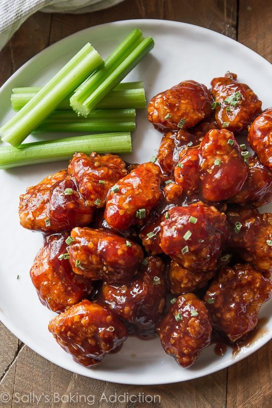

This one is my clutch meal, due to its simplicity and flavor. It packs plenty of protein
and hits the spot, every time.
What you'll need:
- Two Chicken Bites
- Two Steak Bites
- Cooking oil (I prefer olive oil)
- Optional seasoning blend for meat.
- Frozen Vegetables (your choice, I prefer green beans for this mix)
- BBQ Sauce of your choosing (I prefer G. Hughes sugar free Origianl BBQ)
- Stovetop pan for heating
- Foodsafe bowls for distributing
And now for the cooking instructions:
- Grab your stovetop pan, and set the heat to medium.
- Start heating your vegetables in the microwave, according to package instructins. (While the pan is
heating)
- After 5 minutes (about when the vegetables are done), oil up your pan, and add your chicken and steak.
- Heat up the chicken and steak, season to taste if desired.
- Drop the heat to low so you don't overcook the steak bites!
- Grab your foodsafe bowls, and evenly split the heated vegetables.
- After 4 minutes on heat, evenly distribute the meats as well.
- Enjoy your meal, and now you also have an equal sized meal for later!
I usually make this at night, and have the second meal for lunch at work, the next day.
Sometimes if I want or need some additional carbs for fuel, I'll throw this over roated mini potatos,
instead. Talk about a delicious comfort food!
Here's are the macros break down, as well!
- Total Calories: 335
- Protein: 46g
- Carbs: 18
- Fat: 6